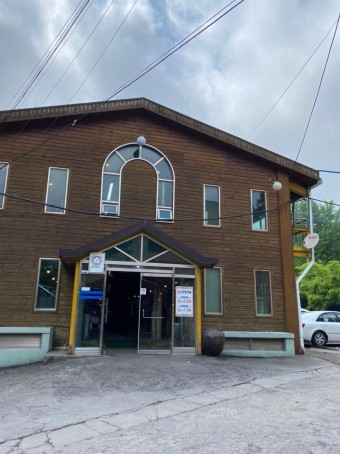
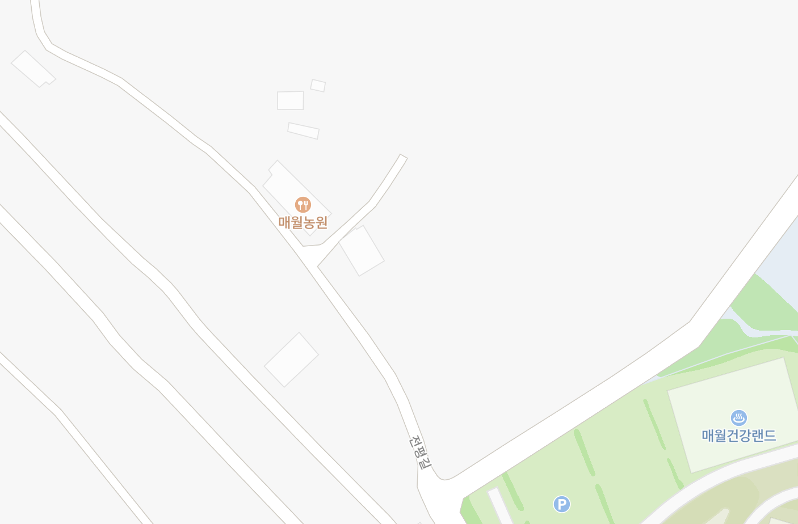
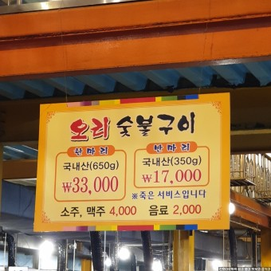
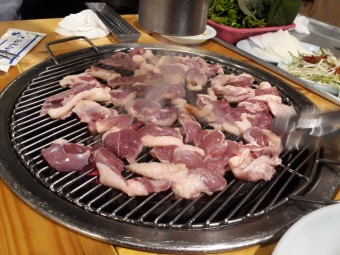
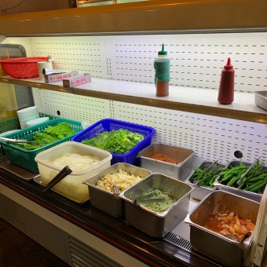

매월농원

주소
광주광역시 서구 전평길 66
메뉴
<메뉴판>

오리한마리 33000원
숯불에 구워먹는 일반적인 오리구이. 유일한 메뉴이며 고기가 신선한 편이라고한다.

<셀프바>
기타사항
외진곳에 위치하고 있어서 자차 또는 택시를 이용해야만 하지만 산장 같은곳이라서 나름의 분위기가 있다고 한다. 오래된 식당이라 그리 깔끔하진 않지만 (특히 화장실) 음식 자체의 신선도는 좋은곳. 또한 바로 앞에 베비에르 빵집이 있어 식사를 마친후 들려서 다양한 빵을 구매하기도 좋다.